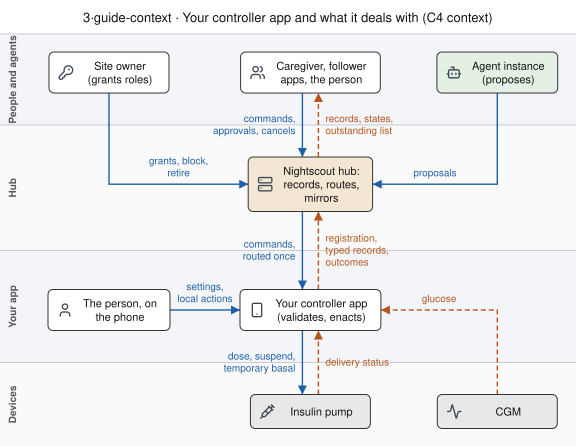
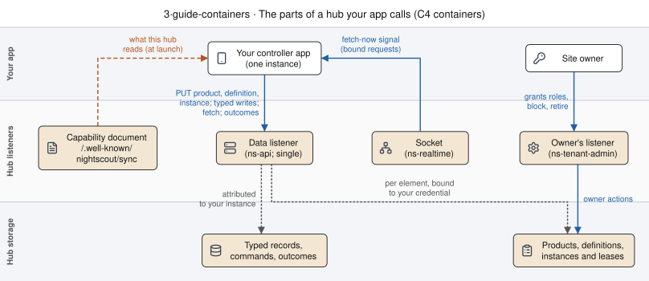

Bringing a controller onto a hub: register it, hold a lease, receive commands and report outcomes¶
Living document, last changed 2026-10-26 at 36487a5dd.
Contributor-facing. Living guide, current at main 127f69e1 (2026-10-18). Uses the platform specifications; terms are in the glossary. Status: the specifications are proposed and not implemented; until HUB-REG-CRM is, each step is checked against its conformance case, not run against a hub.
This guide is for a developer bringing an automated insulin delivery controller, or a controller
app, onto a Nightscout hub that implements the platform specifications. It follows one fictional
controller, Example TestController, whose registration is the synthetic fixture
specs/sync/registrations/fixtures/example-testcontroller.yaml, from the first request to the
outcome of a remote command.
Each step names the rule it follows and a conformance case under specs/sync/conformance/ that
shows it. The examples are copied from those cases by python3 -m tools.nsschema.guide_examples
and never typed by hand, so they name the cases' own fictional products (Example ControllerA,
NegotiationController) where TestController would stand. Times in the command cases are seconds
from the start of the case. Paths and permission names are proposals, as the specifications say.
1. What the hub does and never does¶
The hub records, routes and refuses. It never decides whether a change to therapy is safe, never alters what a sender asked, and never doses (D18). Your controller validates and enacts.
| the hub | your controller |
|---|---|
| accepts or refuses each element of your registration, and stores typed records for what it accepts (registration §5) | writes everything the hub does not accept in today's document shapes, its carriers (registration §6) |
grants each (channel, role) to one live device instance and records overlaps (registration §9) |
keeps running when a role is refused, and writes that channel's records as carriers |
| checks a command's channel, routing, expiry, size and the sender's permission, and nothing else (CM5) | checks the payload hash, the expiry by its own clock, its own limits and the doses and carbs since the command was made (CM10, CM23) |
| records the command, its state and the outcome you report (CM1, CM7) | decides each commandId once, across restarts (CM21), and reports what it did |
| reports overlapping intents as the controller reported them (state and intent S1) | arbitrates between the person, the algorithm, caregivers and agents acting on one pump |
The control-loop analysis lists the entries that only the controller can prevent: validating a remote command against its own limits and recent local actions, assigning identifiers that are unique per record, acting on its own state where the hub's lags, failing a command it cannot deliver to the pump, and, for plans, the checks it makes at each occurrence. No hub rule replaces any of them.
Your app in context (C4 context; roles, not products):

2. Before you start: credentials and roles¶
Your controller is a device. It holds a native per-tenant credential, which belongs to a subject, and never signs in through the caregivers' identity service (AU1). Everything the hub binds to you is bound to that subject, never to a token, so rotating the token changes nothing (AU4).
| you need | for | who grants it | rule | case |
|---|---|---|---|---|
| a credential whose subject is your controller's | every request below; the binding of your product and instances | the tenant: a native per-tenant credential for a device | AU1, AU4, authority §3 | accepted.yaml, update-token-rotated.yaml |
api:registrations:create |
creating and updating the product, adding definitions, creating and renewing instances | included in the role a hub issues by default to a device or uploader credential (API_SECRET on single); the tenant owner may withhold it on the owner's listener |
authority §5, registration §7 | not-authorised.yaml, instances/instance-create.yaml |
api:registrations:delete |
retiring the product, deleting an instance | as api:registrations:create |
authority §5, registration §5 | retire.yaml, retire-not-authorised.yaml |
| to be the product's bound subject | updating or retiring the product, adding a definition, holding a device command-sink |
the first create binds it; the owner can release or transfer it | authority §3, authority §6 | update-not-registration-owner.yaml, instances/instance-command-sink-not-registration-owner.yaml |
| no command permission | fetching your own commands and reporting their outcomes: the hub checks that you are the destination's bound subject | — | CM7, CM18 | commands/fetch-naming-another-instance.yaml, commands/report-from-other-subject-refused.yaml |
(senders) api:commands:create; (followers) api:commands:read |
sending a command; reading a channel's outstanding list | the tenant owner, to caregivers and follower apps | CM5, CM24 | commands/command-without-permission.yaml, commands/outstanding-lists-open-items.yaml |
Under TENANCY_MODE=single there is one listener and API_SECRET may register; the product is
then bound to {kind: api-secret}, and any holder of the secret may update it (authority §3). Every
holder of API_SECRET is one subject, so another app holding it can fetch your commands or report
their outcomes; commands §9 lists this as open (UCA-CMD-014). Give the controller a credential of
its own.
Under TENANCY_MODE=multi each tenant has its own credential root and signing key (AU3). A
registration is per tenant, so a controller that serves two tenants registers twice. A fetch-now
signal is sent only inside a request bound to the command's tenant (CM19), and carries nothing
(CM27); fetch is the path that always works.
3. Walk-through¶
The parts of a hub your app calls (C4 containers; under TENANCY_MODE=single one listener serves all three, and API_SECRET acts as the owner):

3.1 Read the capability document¶
GET /.well-known/nightscout/sync is unauthenticated, cacheable and about the hub software, not a
person (registration §4). It tells you where
to submit and with which permissions:
href: /api/v4/registrations
tiers:
- controller-owned
permissions:
submit: api:registrations:create
retire: api:registrations:delete
and, on a hub that serves definitions and instances, the lease length, the instance id form, and the roles and channels it grants:
leaseSeconds: 900
instanceId: uuid-v4
roles:
- source
- command-sink
channels:
- slot
- element
labels:
maxLabels: 8
maxKeyLength: 96
maxValueLength: 64
| step | you do | the hub answers | rule | case |
|---|---|---|---|---|
| 1 | Read the capability document at launch and after a controller release; never on a timer, on a lease renewal or because a request was refused | the document, the same for every tenant on the deployment | registration §4 | accepted.yaml, typed-write-load-503.yaml |
| 2 | If it answers 404, submit nothing and write every element as its carrier | — (an older hub) | registration §6, registration §17 | older-hub-no-capabilities.yaml |
| 3 | If it has no submit, submit nothing and write carriers |
— | registration §6 | hub-without-submit.yaml |
| 4 | If your grammar major is not in grammar.versions, submit nothing |
a submission would be 422 unsupported-grammar-major |
registration §6, registration §5.2 | rejected-unsupported-grammar-major.yaml |
| 5 | If it has no instances, skip §3.3: typed writes need no instance id |
typed writes accepted without one | registration §17 | instances/typed-write-hub-without-instances.yaml |
| 6 | Predict element results from horizons, typeFragment and limits; the fixture's experimental DailyAdaptation kind is refused where experimental is not listed |
the response is authoritative | G5, registration §6 | rejected-unsupported-availability.yaml |
With no capability document the controller's plan is carriers for every element:
stateSpans/ExampleOverride:
write: carrier
carrier:
collection: treatments
eventType: Temporary Override
durationField: duration
durationUnit: minutes
extensions/com.example.negotiation.targets:
write: carrier
carrier:
collection: settings
documentIdentifier: example-targets
3.2 Register the product and its definitions¶
The product resource is <submit.href>/<vendor>/<product>; its identity is (metadata.vendor,
metadata.product), and versionRange is an attribute, so a release updates the same resource
(registration §5). TestController's identity:
vendor: Example
product: TestController
algorithmFamily: other
tier: controller-owned
versionRange: 0.0.1-test
source: synthetic fixture for tools/nsschema/test_registration_grammar.py
A create is a PUT with If-None-Match: *:
action: submit
identity:
vendor: Example
product: NegotiationController
preconditions:
ifNoneMatch: '*'
The response names the definition id the hub computed, the etag, the binding to your subject, and a result per element:
apiVersion: nightscout.dev/sync/v1
kind: RegistrationResponse
status: 201
outcome: accepted
noop: false
definitionId: sha256:a72ab7f1cf322ebd8b226ce78a030d86865a1c1b8c5b647e670c9ac17b0f064d
registration:
vendor: Example
product: NegotiationController
versionRange: 1.0.0-test
state: active
etag: sha256:3aaaa298028f1593078375fd1ade48a265aedf04f1d5bd2b5d20b40d3a231c5d
boundTo:
kind: subject
subject: subject-test-controller-a
credentialKind: subject
ignored: []
elements:
- element: stateSpans/ExampleOverride
result: accepted
- element: extensions/com.example.negotiation.targets
result: accepted
| step | you do | the hub answers | rule | case |
|---|---|---|---|---|
| 1 | PUT the registration with If-None-Match: * |
201 accepted or partial, definitionId, etag, boundTo your subject |
registration §5, D18 | accepted.yaml |
| 2 | Expect the checks in order: permission and binding, preconditions, the owner's block, the registration as a whole, then each element | 403, 428, 412, 403 blocked-by-owner, 422 or 413 with nothing stored |
registration §5.2 | not-authorised.yaml, blocked-pre-emptive-create.yaml, rejected-limit-exceeded.yaml |
| 3 | Read each element's result; write typed only what is accepted or accepted-with-ignored-members, and treat an unknown result or reason as not accepted |
per-element results; ignored members listed as dotted paths and kept as written | registration §6, G1 | accepted-with-ignored-members.yaml, extensions-not-interpreted.yaml |
| 4 | Declare every extension field with a type; the namespace (com.example.testcontroller.adaptiveTargets) is first to claim per tenant |
untyped-extension, namespace-claimed or namespace-not-owned for that element only |
G2, authority §5 | accepted-first-to-claim.yaml, rejected-untyped-extension.yaml, rejected-namespace-claimed.yaml |
| 5 | Unknown terms in your vocabularies (end reasons, transports, initiators) go in the form {value: other, controllerTerm} |
rendered "other: term", never a rejection | G3, S8 | specs/sync/registrations/fixtures/example-testcontroller.yaml |
| 6 | Retry a create whose response was lost with the same body | 200 noop: true with the stored etag |
registration §5.4 | create-retry-noop.yaml |
| 7 | On a controller release, PUT again with If-Match: <etag> |
200 and a changed etag; 412 stale-etag if the etag is old |
registration §5.4 | update-accepted.yaml, update-stale-etag.yaml |
| 8 | Give an element a new version whenever its meaning changes (a unit, an end encoding, a vocabulary) |
the same version with another meaning is version-conflict for that element |
G4, S12, registration §7 | instances/product-update-new-version.yaml, instances/product-update-version-conflict.yaml |
| 9 | Add a definition for another build that runs beside the release: PUT …/definitions/<definitionId> with If-None-Match: *, where the id is sha256: over the RFC 8785 canonical JSON of the body |
201, the product's etag unchanged; 422 definition-id-mismatch when the hash is not the path id |
registration §7, identity §2 | instances/definition-put.yaml, instances/definition-id-mismatch.yaml |
| 10 | Retire the product with DELETE and If-Match when the controller stops using it; write carriers from that moment |
200 retired; stored data kept; namespaces held until the owner frees them |
registration §5 | retire.yaml |
To receive commands, declare it. A kind carries a command-sink role only when it declares
acceptsFromHub.channels with command (S10); the cases' override kind does:
The fixture's override kind declares the same, so TestController may hold command-sink on the
override slot. Its commands[] declares how commands reach it (S11): a path of its own, with an
other transport and the hub optional, and the hub's command record (nightscout-commands), with
a fetch bound of 60 s and the live transports it listens on for fetch-now signals (CM28, CM29):
- transport:
value: other
controllerTerm: example-relay
hubInPath: optional
availability: experimental
- transport: nightscout-commands
hubInPath: 'yes'
availability: experimental
fetchIntervalSeconds: 60
liveTransports:
- socket
- value: other
controllerTerm: example-broker
| step | you do | the hub answers | rule | case |
|---|---|---|---|---|
| 11 | Declare acceptsFromHub with command on each kind you accept commands for, and commands[] for each path commands reach you by; for the hub's command record, a nightscout-commands entry with fetchIntervalSeconds if you fetch more often than once a cycle and the liveTransports you listen on |
a command-sink claim on any other channel is refused not-a-command-channel |
S10, S11, CM28, CM29, registration §9 | instances/instance-not-a-command-channel.yaml, instances/instance-create.yaml, commands/fetch-bound-declared.yaml |
3.3 Create an instance, hold and hand off its lease¶
An instance is one running copy of your controller: the phone that doses, a development build, a
simulator, the old and the new phone during a migration
(registration §8). It names a stored definition, claims
roles on channels and renews a lease. TestController's override slot is the shared slot override,
so it contends with any other product's instance on that slot; its extension's channel is its own,
Example/TestController/extensions/com.example.testcontroller.adaptiveTargets.
apiVersion: nightscout.dev/sync/v1
kind: ControllerInstance
definitionId: sha256:ee552930b207551ed46bbbe4e1065e3c67773415193f3a067ef46816201da2ab
roles:
- channel: override
role: source
provenance: device
- channel: override
role: command-sink
provenance: device
- channel: Example/ControllerA/extensions/com.example.controllera.targets
role: source
provenance: device
labels:
dev.nightscout/purpose: therapy
dev.nightscout/build: release
| step | you do | the hub answers | rule | case |
|---|---|---|---|---|
| 1 | Generate a random lowercase UUID v4 once per running copy; never derive it from a device name, model or serial | 422 invalid-instance-id for any other form |
identity §2, registration §8 | instances/instance-invalid-id.yaml |
| 2 | PUT /api/v4/instances/<instanceId> with If-None-Match: *, naming your product (product: {vendor, product}) and a stored definitionId, each role as {channel, role, provenance}, and labels |
201 with leaseExpiresAt and a result per role; 422 unknown-definition for a definition the product does not store |
registration §8, registration §9 | instances/instance-create.yaml, instances/instance-unknown-definition.yaml |
| 3 | Use labels to distinguish copies: keys are <reverse-DNS namespace>/<name>, dev.nightscout/ is reserved for purpose, build and migration-group; never put names, device names or serials in them |
422 invalid-label |
registration §10 | instances/instance-label-not-namespaced.yaml, instances/instance-label-reserved-unknown.yaml |
| 4 | Give every role a provenance: device for the copy that doses, simulated for a simulator |
simulated roles never contend with device roles and are never a command destination | registration §9, commands §2 | instances/instance-role-simulated.yaml, instances/command-no-destination-simulated.yaml |
| 5 | When a role is refused role-held, keep running and write that channel's records as carriers |
201 partial; the overlap is shown on the owner's listing |
registration §9, registration §6 | instances/instance-role-held.yaml, instances/instance-overlap-listed.yaml |
| 6 | Renew before leaseExpiresAt with If-Match: <instance etag> and the same body |
200 noop: true; the lease moves on; a renewal is not a capability re-check |
registration §8 | instances/instance-renew.yaml |
| 7 | On 412 at renewal, read the instance and renew again: a role was moved or dropped | 412 stale-etag with the current etag |
registration §8, authority §6 | instances/instance-renew-after-transfer-stale.yaml, instances/rebind-release-drops-command-sink.yaml |
| 8 | To hand the pump to another phone, delete the old instance, or renew it without the role; the new phone claims the role on its own next renewal, and both may carry one dev.nightscout/migration-group label |
200 released; the claimant's renewal is granted |
registration §9, registration §10 | instances/instance-delete.yaml, instances/instance-handoff-release.yaml |
| 9 | Expect a holder that stops renewing to lapse; its role goes to no one until a claimant renews, and commands meanwhile have no destination | 409 no-command-destination for a command in that window |
registration §9, commands §2 | instances/instance-handoff-lapse.yaml, instances/lapsed-role-not-auto-assigned.yaml |
| 10 | Run a development build under its own subject; it gets source roles, and a device command-sink only if the owner transfers it |
201 partial, command-sink refused not-registration-owner |
authority §6 | instances/instance-command-sink-not-registration-owner.yaml, instances/owner-transfer-role-other-subject.yaml |
A refused role changes the write plan for that channel only. Here the override kind goes as its carrier and the extension stays typed:
stateSpans/ExampleOverride:
write: carrier
carrier:
collection: treatments
eventType: Temporary Override
durationField: duration
durationUnit: minutes
extensions/com.example.controllera.targets:
write: typed
A lease is minutes long (registration §8), longer than moving a pump to another phone takes, so a command can reach the old phone in that window. §3.5 step 15 says what holds then.
3.4 Write typed records with attribution¶
On a hub that advertises instances, every typed write names the writing instance (proposed as a
request header), and the instance must be live and hold source on the element's channel
(registration §11):
The accepted record carries its instance, its definition and the role's provenance:
accepted: true
as: typed
attributedTo:
vendor: Example
product: ControllerA
instanceId: 00000000-0000-4000-8000-00000000000a
definitionId: sha256:ee552930b207551ed46bbbe4e1065e3c67773415193f3a067ef46816201da2ab
provenance: device
| step | you do | the hub answers | rule | case |
|---|---|---|---|---|
| 1 | Write an accepted element typed, naming your instance | 200, attributed to the instance, its definition and its provenance | registration §11 | instances/typed-write-attributed.yaml |
| 2 | Never send a typed write without an instance id to a hub that advertises instances; on 422 instance-required, send that record as its carrier |
422 instance-required, a definite refusal |
registration §11, registration §6 | instances/typed-write-instance-required.yaml |
| 3 | On 409 role-held or role-not-granted, send that record as its carrier |
409 | registration §11 | instances/typed-write-role-held.yaml |
| 4 | On 429 or any 5xx, retry the same record with backoff, no sooner than Retry-After; never write it as its carrier and never drop it |
the record is stored once when the retry succeeds | registration §6 | typed-write-load-503.yaml, typed-write-load-429-retry-after.yaml |
| 5 | On any other refusal (blocked-by-owner, a typed route answering 404, an unknown 4xx), send that record as its carrier at once and treat the element as not accepted until your next launch or release |
403, 404 | registration §6 | typed-write-blocked-by-owner.yaml, typed-write-route-404.yaml |
| 6 | Give every record an identifier that is yours, stable across retries and unique per record; re-send with the same one |
a matched re-send stores no second copy and is answered with the stored ids | I1, I4, I5, I7 | quirks/typed-write-resend-same-ids.yaml, quirks/typed-write-assigns-objectid.yaml |
| 7 | When the element's carrierView is served, write typed only; when it is not served and the element declares dualWriteLink, write typed and as its carrier |
older readers see one document either way | registration §6, registration §13 | accepted-dual-write-view-served.yaml, accepted-dual-write-view-not-served.yaml |
| 8 | Write from a simulator under its simulated source role |
provenance simulated, which default views and exports do not treat as therapy data |
registration §9, registration §11 | instances/typed-write-simulated.yaml |
| 9 | Keep writing carriers whatever your roles: exclusivity never blocks a carrier write | 200 | registration §11 | instances/carrier-write-claimant.yaml |
How writes are matched, ordered and delivered over REST and the socket is sync-transport; a typed record keeps the definition it was written under (T13).
3.5 Receive a command, check it, enact it once, report the outcome¶
A command names a channel. The hub sends it to the live device instance holding command-sink on
that channel, on the command's tenant, and fixes that destination when it accepts the command
(commands §2, CM2). A sender's command, as a case
writes it, carries a payload and an expiry:
at: 10
kind: command
tenant: A
subject: s-care
channel: override
product: ControllerA
payload:
action: start
preset: example
expiresAt: 600
The capability document's commands member says whether the hub offers the command record, and
where (CM31). The paths are proposed in commands §7.1
(CM32): you fetch at GET /api/v4/instances/{instanceId}/commands and report at
POST /api/v4/commands/{commandId}/reports. The steps name the operation; the cases model calls,
not requests.
| step | you do | the hub answers | rule | case |
|---|---|---|---|---|
| 1 | Hold command-sink with device provenance on each channel you accept commands for (§3.3) |
the command is routed to you; never to a lapsed holder, a simulator or the newest instance | commands §2, CM1, CM2 | commands/route-to-holder.yaml, commands/route-lapsed-holder-not-destination.yaml |
| 2 | Read the capability document's commands member at launch and after a release; without it the hub offers no command path, so keep your own transports |
with no member, every command path is 404 | CM31 | commands/discover-without-commands-capability.yaml, commands/discover-with-commands-capability.yaml |
| 3 | Fetch with your own credential, naming your own instance, at least once per cycle or within the fetchIntervalSeconds you declare; a fetch returns each command, and each cancel carried to you, until you report, so a lost reply costs one fetch |
200 with your commands only, again until you report; an empty list once you no longer hold the role; 403 not-registration-owner for another instance; the sender sees your bound as fetchWithinSeconds |
CM18, CM26, CM29, CM30 | commands/fetch-returns-own-commands.yaml, commands/fetch-reply-lost-refetch-delivers.yaml, commands/refetch-after-acknowledged-empty.yaml, commands/fetch-after-role-lost-is-empty.yaml, commands/fetch-bound-default-cycle.yaml |
| 4 | To fetch sooner than your bound, listen for fetch-now signals on a transport the hub lists in commands.liveTransports and you list in your liveTransports; answer a signal by fetching. A signal carries nothing, and a lost one delays a command until your next fetch |
a signal goes to your instance only, inside a request bound to your tenant; a platform push only with your tenant's own credential; none when you share no transport with the hub | CM27, CM28, CM19, CM20 | commands/signal-to-destination-only.yaml, commands/signal-lost-fetch-delivers.yaml, commands/signal-unbound-withheld-under-multi.yaml, commands/signal-platform-push-no-tenant-credential.yaml, commands/signal-without-live-transport.yaml |
| 5 | Do not read a signal or fetched as success; only your report sets an outcome |
the command stays pending after a signal and fetched until you report |
CM17, CM7 | commands/signal-and-fetch-are-not-success.yaml |
| 6 | Refuse a command at or past expiresAt by your own clock, with reason expired |
without your report, a fetched command reads unconfirmed after its expiry |
CM10, CM3, CM8 | commands/enact-after-expiry-refused.yaml |
| 7 | Recompute payloadHash (sha256: over the RFC 8785 canonical JSON of the payload you received) and refuse hash-mismatch when it differs from the command's |
your report is recorded as reported, with the record marked a mismatch | CM10, CM7 | commands/enact-hash-mismatch-refused.yaml, commands/request-id-reordered-keys-same-hash.yaml |
| 8 | Authenticate the sender by your own means where you require it; the hash detects a payload changed in transit or storage, and does not authenticate the sender or show what an approver approved | the hub carries authentication material unread | CM10, D18 | commands/hub-does-not-judge-payload.yaml |
| 9 | Apply your own limits and your acceptance preference; refuse with limit or not-accepted |
the hub never checks a dose, a limit or the therapy state, and never changes the payload | CM5, CM8, S10 | commands/hub-does-not-judge-payload.yaml, commands/report-after-final-refused.yaml |
| 10 | Before enacting a dose or carbs, compare the doses and carbs you hold since the command was made, and refuse doses-since when your own rule says the command is no longer wanted |
the rule and its threshold are yours | CM23, D18 | commands/enact-dose-refused-doses-since.yaml, commands/enact-dose-no-doses-since.yaml |
| 11 | Decide each commandId once: record it when you first enact or refuse it, keep the record across restarts until expiresAt by your clock, and answer any later delivery without enacting it and without a second report |
— (a fetch returns a command until you report, so delivery is at least once) | CM21, CM26 | commands/enact-refetched-once.yaml, commands/enact-after-restart-once.yaml, commands/enact-refused-then-redelivered-ignored.yaml |
| 12 | Treat two commandIds with the same payload as two commands; enact-once does not catch a second send, your doses-since check does |
each is enacted unless your checks refuse it | CM21, CM4, CM23 | commands/enact-two-commands-same-payload.yaml |
| 13 | Report acknowledged if you want the sender to see it (optional), then one final state: succeeded, failed or refused, with the payloadHash you computed, a reason when refused or failed, and when enacted the identity of the record that shows the effect |
200; a report from any other subject is 403 not-registration-owner; a state other than the four is 422 invalid-state |
CM7, CM9 | commands/acknowledged-then-succeeded.yaml, commands/report-from-destination-accepted.yaml, commands/report-state-fetched-invalid.yaml |
| 14 | Give a reason from the shared list (hash-mismatch, expired, not-accepted, limit, doses-since, cancelled) or as {value: other, controllerTerm}; send one final state only |
a bare unknown string is 422 invalid-reason; a second final report is 409 already-final |
CM8, CM9 | commands/report-reason-other-accepted.yaml, commands/report-reason-bare-string-invalid.yaml, commands/report-after-final-refused.yaml |
| 15 | When you hand the pump to another phone with a command outstanding: a command the old phone fetched stays with it, which decides it and reports; one it never fetched becomes undeliverable, whatever signals were sent, and nothing is re-routed |
your report is accepted from the destination's bound subject even after the role moved | CM2, CM7, CM9 | commands/fetched-before-holder-changes.yaml, commands/undeliverable-not-rerouted.yaml, commands/fetched-then-lapse-report-accepted.yaml, commands/signalled-then-lapse-undeliverable.yaml |
| 16 | Expect no cancel for a command cancelled before hand-over: it is final and never delivered | the sender gets 200 cancelled; your fetch returns nothing |
CM25 | commands/cancel-pending-is-final.yaml |
| 17 | When a fetch carries a cancel for a command you have not decided, refuse it with reason cancelled and report; when you have already decided it, your outcome stands. Each fetch carries the cancel until you report |
the sender got 202 with cancelRequested; after your final report a cancel is 409 already-final |
CM25, CM21, CM26 | commands/cancel-after-fetch-is-a-request.yaml, commands/cancel-carried-until-report.yaml, commands/cancel-after-outcome-refused.yaml |
A command fetched twice before a report, decided once (step 11). The answers below follow the
case's calls in order: the sender's command, the first fetch, the first enactment, the next fetch
that returns the command again, and the second enactment, answered ignored with nothing enacted:
- status: 201
commandId: c1
state: pending
fetchWithinSeconds: 30
- status: 200
commands:
- c1
- state: succeeded
- status: 200
commands:
- c1
- state: ignored
reason: duplicate
A cancel after hand-over (step 17). The answers follow the case's calls in order: the sender's command, your fetch, the sender's cancel (202), your next fetch carrying the cancel, your refusal and your report:
- status: 201
commandId: c1
state: pending
fetchWithinSeconds: 30
- status: 200
commands:
- c1
- status: 202
state: fetched
cancelRequested: true
- status: 200
commands: []
cancels:
- c1
- state: refused
reason: cancelled
- status: 200
A refusal reported in the controller's own term (step 14):
at: 20
kind: report
tenant: A
subject: s-ctl-a
command: c1
state: refused
reason:
value: other
controllerTerm: example-busy
A command may also come from an approved proposal; it reaches you the same way and carries the
proposal's proposalId and basedOn (CM13). The hub checks the proposal's state version and the
doses that reached it after the proposal (CM15, CM22); those checks see the hub's record, which
lags your upload, and do not replace yours (CM23).
4. What older hubs and older apps see¶
The compatibility table says, for every app the corpus holds and every layer, what the app does today and what it sees from a hub that implements the specifications; its overview, its L3 table and where an answer changes are the parts a controller author reads first. For TestController:
| who | sees | rule | case |
|---|---|---|---|
| a hub with no capability document | today's documents, written as carriers; nothing is negotiated | registration §17 | older-hub-no-capabilities.yaml, instances/carrier-write-older-hub.yaml |
a hub with capabilities and no instances |
typed writes with no instance id; no roles and no command destination | registration §17 | instances/typed-write-hub-without-instances.yaml |
a hub with no commands member in its capability document |
no hub command path; commands reach you only by the transports you have | CM31 | commands/discover-without-commands-capability.yaml |
| an older reader or follower on API v1 or v3, where the element's view is served | a projected document in the carrier's shape, labelled projectedFrom, read-only |
registration §13, I8 | instances/project-served.yaml, instances/write-projected-read-only.yaml |
| the same reader where no view is served | the carrier you dual-write, linked to the typed record | registration §6, registration §13 | accepted-dual-write-view-not-served.yaml, instances/project-no-mapping.yaml |
an older controller of another product on the shared override slot |
its writes go to its product's unregistered instance and are never refused for exclusivity | registration §11, Q2 | instances/carrier-write-older-controller.yaml, newer-hub-older-controller.yaml |
| a follower that reads the queue | each open proposal and command not yet final on a channel, with its sender and the doses and carbs since | CM24 | commands/outstanding-lists-open-items.yaml, commands/outstanding-excludes-final.yaml |
Follower apps read today (LoopFollow, LoopCaregiver, nightguard) do not read the outstanding list;
the table marks the command record and the list opt-in for them.
5. Checklist¶
- The capability document is read at launch and after each release; with none, no
submit, an unlisted grammar major or noinstances, the controller writes carriers. - Every element in the registration is typed where it must be, versioned where its meaning can
change, and uses
{value: other, controllerTerm}for terms outside the shared lists. - Each kind that takes commands declares
acceptsFromHubwithcommand, andcommands[]lists how commands reach the controller. - Each running copy has its own random UUID v4, a provenance on every role, labels without names or serials, and renews its lease before it lapses; a 412 at renewal is followed by a read.
- A refused role or element sends that channel's or element's records as carriers; a load refusal is retried, never written as a carrier.
- Every record has an
identifierunique to it and stable across retries. - Fetch is implemented, at least once per cycle or within the declared
fetchIntervalSeconds; a fetch-now signal is answered with a fetch and carries nothing. - Before enacting: the hash, the expiry by the controller's own clock, its limits and acceptance preference, and the doses and carbs since the command was made.
- Each
commandIdis decided once, recorded across restarts until its expiry, and reported once with one final state and a reason from the shared list or in theotherform. - A cancel carried by a fetch refuses a command not yet decided; a command already decided keeps its outcome.
6. Where to go next¶
- Plans: a recurring intent approved once, held and run by the controller and mirrored by the hub.
- Commands §9 and the
control-loop analysis: what is open,
including a late failure after
succeededand an outcome per part of a command. - Command journeys: caregivers, followers and agents acting on one pump, step by step.
Gaps¶
Steps this guide needs that no rule or no case covers:
- The effect record in a report. CM7 asks a report of an enacted command to carry the identity of the record that shows the effect; no case shows a report with it.